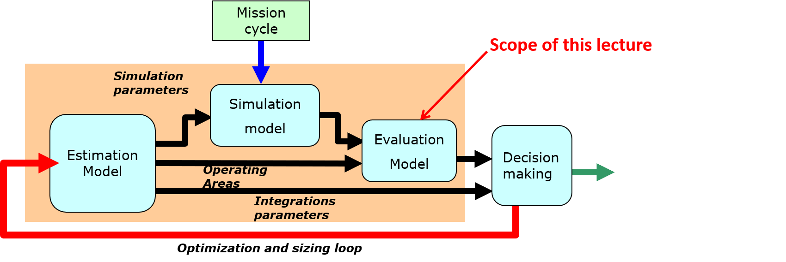
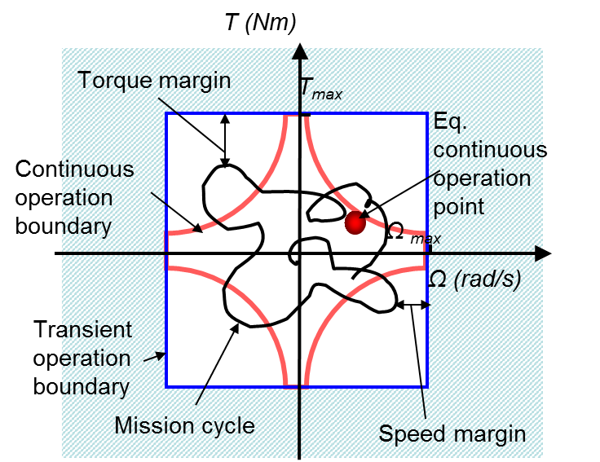
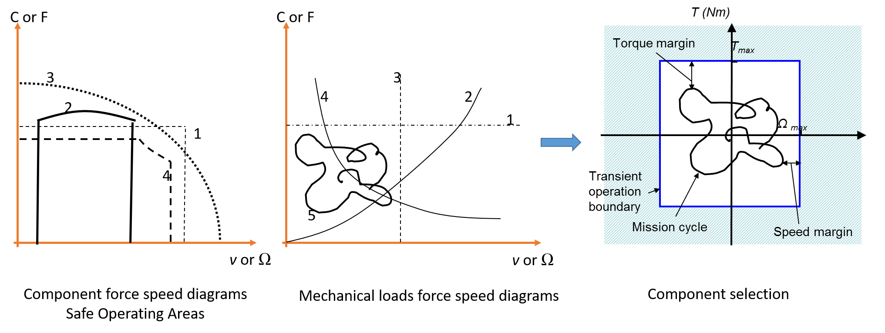
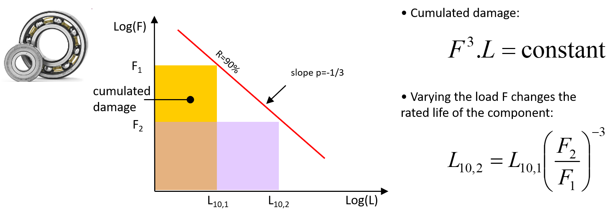
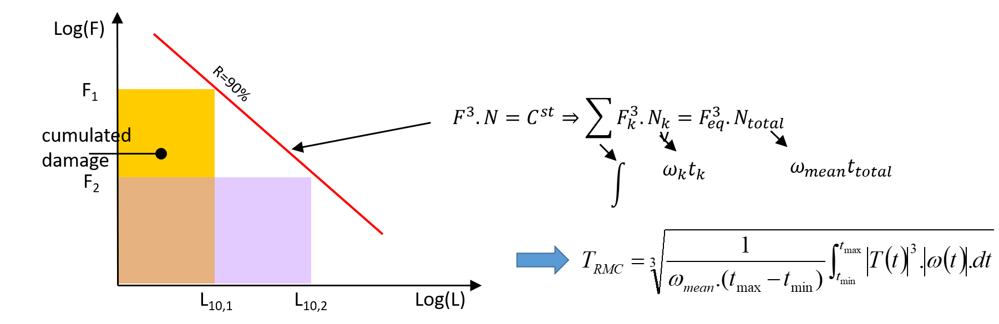
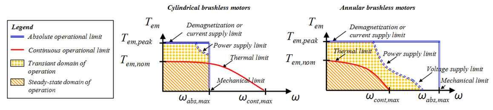
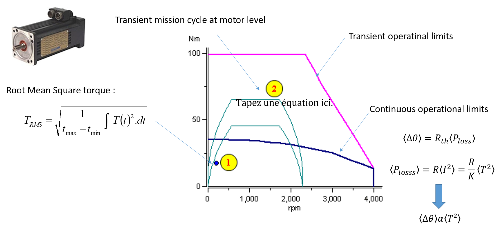

2.2. Evaluation models#
The objective evaluation models is to check the ability of a component to operate in its safe operating area for the required lifetime and reliability. After reviewing the state of the art of the main design drivers that limit the performance and endurance of mechatronic components, this lecture describes the possible models and ways of implementing them in system simulation environments by focusing on lifetime evaluation.

For interested readers, more information can be found in the following document (Chapter 3 - Evaluation models and sizing for lifetime and reliability):
Budinger, M. (2014). Preliminary design and sizing of actuation systems (HDR dissertation, UPS Toulouse). Link
2.2.1. Rapid damages & Gradual degradation#
Evaluations models must ensure us that the components selected can satisfy :
1. Transient power demand - Performance
Maximum acceptable transient torque
Maximum acceptable transient speed
Prevents rapid damages (e.g., permanent deformation, rupture)
2. Continuous power demand - Endurance
Nominal operation point (nominal torque and speed) and reliability
Addresses gradual degradation (e.g., fatigue) and ensures reliable operation during service lifetime

Description
The evaluation models determine whether each component will remain within its performance limits and can be expected to have the required lifetime and reliability. The 2 aspects to check are:
Transient power demands to ensure system performance: the models have to analyze the maximum stress (such as torque or speed) to avoid rapid deterioration. Component degradation can be avoided if the use is kept inside a Safe Operating Area (SOA). This point can be checked by the simulation models and operating domains deduced from the estimation models.
Continuous power demands to ensure the endurance of the system: the models have to calculate quantities equivalent to the nominal point of operation and reliability rate in order to avoid critical degradation over time (e.g. fatigue). This point will be treated in greater detail in this chapter.
Operational limits in transient domain can be represented by a power plan, like the effort/speed one. The effort-speed characteristics (or effort-position) allow to represent in a graphic way the principal mechanic attributes of an actuator : effort, speed, and, as of product of those, power.
2.2.2. Force speed diagrams & component selection#
The force-speed plane in mechanics, voltage-current in electricity, pressure-flow in hydraulics, can be used as an abbreviated representation of a component’s operational limits.

Description
Those graphs show the operational limits in an effort speed plan for several components :
A mechanic reducer (gears)
A combustion motor
An hydraulic jack, piloted by a servovalve
An electric motor, with permanent magnets and a speed variator
We can also use this graphic representation to characterize mechanical loads to move (with the receiver convention)
For constant torque : lifting devices, conveyors, high speed vehicles
Torques function of speed (square) : fans, pumps, propellers
Constant speed : synchronous alternators
Constant powers : winding devices, lathe machines
Any mission profile which varies with time.
The principle of performance checking to avoid rapid degradation is quite trivial: for a given parameter to be checked, the current value is simply compared with the maximum allowed value.
2.2.3. Gradual degradation & Lifetime#
For each typical component of mechatronic systems, we list the causes of rapid and gradual degradation. The plan followed depends mainly on the gradual degradation mechanisms. For these degradation phenomena, only the simplest laws usable at preliminary design level will be given. This section does not describe the detailed design of each component exhaustively but focuses on the selection of a component.
The lifetime is the acceptable period of use in service of a product. Acceptable refers to the product reliability (= 90%, generally). Lifetime is a stochastic variable depending on service conditions (stress, environment, etc.).
2.2.4. Mechanical power transmission components#
Typical components in mechanical power transmission can be divided into 3 categories according to the type of gradual degradation:
Rolling mechanisms: bearings, roller/ball-screw and linear ball bearings
Sliding mechanisms: rod-end, bushing and electromagnetic clutch/brake
Gears mechanisms: gears, reducers and worm-gear.
For the last category, the failure mechanism can be complex and involve a mix of various fatigue phenomena. Nevertheless, when normal conditions of functioning (lubrication, sealing, etc.) are assumed, the first fatigue phenomena must be rolling fatigue of bearings, as gears are often designed to have much higher tooth flexural or Hertz stress fatigue limits. The rolling fatigue can be displayed in a log-log diagram.

Description
Under varying stress or repeated deformations, micro-cracks are created in the material of a component, reducing the resistance of this component to stress and plastic deformation. This is referred to fatigue. For a mechanical component subject to fatigue this lifetime formula can normally be applied.
\(N_{10}.σ^\alpha=Q\)
The concept is based on the Palmgren Miner law. Here \(N_{10}\) refers to the standard number of load cycles for bearings (normally 1 million cycles) that can be guaranteed for a standard reliability of 90%, \(\alpha\) is the applied stress and \(Q\) the resulting sum of cumulated damage. For the same component and the same reliability, the amount of cumulative damage must remain constant and identical whatever the (\(N_{10}\),\(σ\)) pair leading to degradation of the component. For rolling components, the power coefficient \(\alpha\) is a value greater than 1 and indicates that a larger load causes more damage than a load of lower value. For ball bearings, this coefficient is equal to 3. The cycle number \(N_{10}\) has no power coefficient which indicates that the amount of damage is linear and cumulative.
For gearboxes or components incorporating bearings, and assuming that damage accumulates linearly, in proportion to the number of revolutions, an equivalent torque for a complex profile mission can be calculated : the root-mean-cube torque.

2.2.5. Electrical motors and electrical components#
This category consists mainly of components where temperature effects and thermal degradation are the major phenomena leading to failure: electrical motors, cables and wires, capacitors and resistors. Temperature effects and thermal degradation are the major causes of failure of many electrical components.

Description
Motors are composed of mechanical parts (bearings, housing and heat-sink which can be directly machined in the housing) except when they are sold in frameless form. Therefore they inherit all the rapid degradation drivers of the mechanical parts and especially the speed limit. Another speed limit will result from centrifugal forces applied to rotor coils or permanent magnets. The other main operational limits are due to:
Current: current and thus torque are limited either by saturation or by magnet demagnetization.
Temperature: when considering steady-state thermal exchange, the copper losses (which depend onf torque and current) and iron losses (which depend on speed) must not exceed the nominal/rated torque or current defined for a given thermal environment.
Voltage: power electronics limitations can impact motor performance by introducing power limitation or additional speed limitations linked to the voltage limitation.
In the above Figure the effects of the mechanical, electrical and thermal operational limits for cylindrical brushless motors and annular brushless motors can be seen. The figure also shows that continuous operation limits are much lower than absolute transient operational boundaries.
The continuous torque of a motor is limited by the losses in the body and the winding temperature. This average temperature depends on the average losses, as a function of the RMS current, which in turn depends on the RMS torque. In conclusion, it is important to ensure that the effective torque, or root-mean-square torque (RMS torque), is below the motor’s continuous limit.
